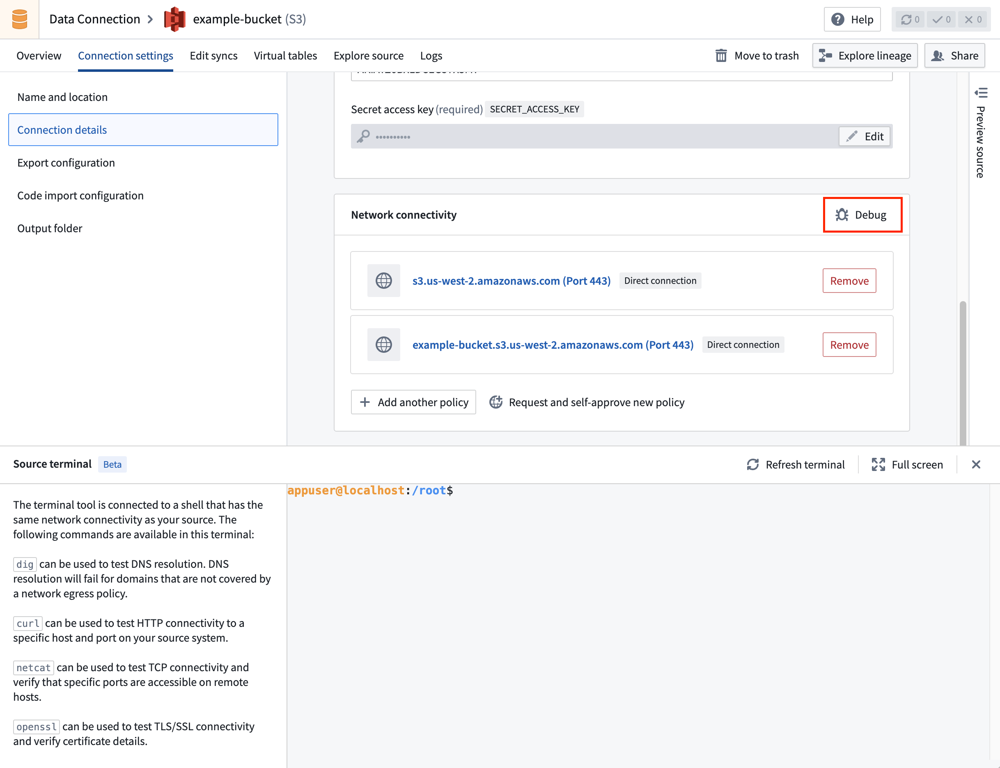

When a source is not behaving as expected, use this page to diagnose and resolve the issue. It describes the troubleshooting tools available in Data Connection, where to look first when a connection is not working, and how to resolve common connectivity and certificate problems.
For problems specific to syncs or agents, see Capability-specific issues.
Use this list as a first pass when a source or connection is not working.
dig, curl, and openssl s_client against your source's hostname and port.PKIX or SSLHandshakeException errors indicate that the correct certificates are not configured for the source. See Certificates and TLS.HTTP 401: Unauthorized and similar errors usually indicate that the calling user has not completed the interactive authorization flow, that the outbound application is disabled, or that the configured scopes are insufficient. See OAuth and outbound applications.If your source uses an agent worker, also confirm the agent shows as Online in Data Connection and review the agents troubleshooting reference for status-specific guidance.
Data Connection provides several built-in tools to help you investigate connectivity, authentication, and data movement issues without leaving the platform.
For Foundry worker sources, you can hand off debugging to AI FDE, Palantir's AI-powered forward deployed engineer. AI FDE loads your source and its associated egress policies into context and uses the same egress logs and source debug tools described on this page to investigate connectivity failures on your behalf.
To start an AI FDE debugging session from a source:
AI FDE will summarize what is working, what is failing, and suggest specific fixes (for example: missing egress policies, incorrect address or port, TLS configuration issues, or credential problems).
:::callout{theme="neutral"} Debug with AI FDE is available only for sources that use a Foundry worker runtime. AI FDE requires AIP to be enabled on your enrollment. To learn more about how AI FDE works, what it can do, and how it manages context and permissions, see the AI FDE overview. :::
A terminal, using the same connectivity settings as your source, is available to help you test network connectivity with your external systems using commands such as dig, curl, netcat, and openssl.
To open the terminal, select Debug in the Network connectivity panel under Connection details on the source page.

digThe dig command tests DNS resolution and can be used to check whether the hostname of your source resolves correctly. For example, to test whether DNS resolves palantir.com, run dig palantir.com. If you see an ANSWER SECTION in the response, DNS resolution succeeded.
The following is an example of a successful dig command:
appuser@localhost:/root$ dig palantir.com
; <<>> DiG 9.18.30-0ubuntu0.20.04.2-Ubuntu <<>> palantir.com
;; global options: +cmd
;; Got answer:
;; ->>HEADER<<- opcode: QUERY, status: NOERROR, id: 13561
;; flags: qr rd ra; QUERY: 1, ANSWER: 4, AUTHORITY: 0, ADDITIONAL: 0
;; QUESTION SECTION:
;palantir.com. IN A
;; ANSWER SECTION:
palantir.com. 300 IN A 151.101.129.170
palantir.com. 300 IN A 151.101.1.170
palantir.com. 300 IN A 151.101.193.170
palantir.com. 300 IN A 151.101.65.170
;; Query time: 99 msec
;; SERVER: 10.100.0.53#53(10.100.0.53) (UDP)
;; WHEN: Fri Oct 31 14:56:58 UTC 2025
;; MSG SIZE rcvd: 142
curlThe curl command tests HTTP connectivity to a specific host and port on the external system. If the port is not specified, it is inferred from the protocol (for example, 80 for HTTP or 443 for HTTPS). For example, to test whether connectivity can be established to https://palantir.com, run curl https://palantir.com.
The following is an example of a successful curl command:
appuser@localhost:/root$ curl https://palantir.com
<HTML><HEAD><meta http-equiv="content-type" content="text/html;charset=utf-8">
<TITLE>301 Moved</TITLE></HEAD><BODY>
<H1>301 Moved</H1>
The document has moved
<A HREF="https://www.palantir.com/">here</A>.
</BODY></HTML>
If the curl command is hanging, set a timeout (in seconds) using the --connect-timeout flag:
curl --connect-timeout 10 https://palantir.com
opensslThe openssl command tests SSL/TLS connectivity and verifies certificates for HTTPS connections. For example, to test whether an SSL/TLS connection can be established to palantir.com on port 443, run openssl s_client -connect palantir.com:443 -servername palantir.com.
The following is an example of a successful openssl command:
appuser@localhost:/root$ openssl s_client -connect palantir.com:443 -servername palantir.com
CONNECTED(00000003)
depth=2 C = BE, O = GlobalSign nv-sa, OU = Root CA, CN = GlobalSign Root CA
verify return:1
depth=1 C = BE, O = GlobalSign nv-sa, CN = GlobalSign Atlas R3 DV TLS CA 2024 Q2
verify return:1
depth=0 CN = *.palantir.com
verify return:1
---
Certificate chain
0 s:CN = *.palantir.com
i:C = BE, O = GlobalSign nv-sa, CN = GlobalSign Atlas R3 DV TLS CA 2024 Q2
a:PKEY: rsaEncryption, 2048 (bit); sigalg: RSA-SHA256
v:NotBefore: Jun 17 16:50:15 2024 GMT; NotAfter: Jul 19 16:50:14 2025 GMT
---
SSL handshake has read 3654 bytes and written 442 bytes
---
If the connection is successful, you will see certificate details and a message indicating the SSL handshake completed. If the command hangs or shows certificate verification errors, there may be network or certificate configuration issues.
Certificates configured in the UI are not automatically included in the terminal environment. To use them in the terminal, add them manually, either inline or with nano/vim:
echo "-----BEGIN CERTIFICATE-----
MIIGXjCCBUagAwIBAgIQASByQ6gv8Z6X7wEqsyBb1DANBgkqhkiG9w0BAQsFADBY
...
9lc=
-----END CERTIFICATE-----" > server-cert.pem
To test with custom certificates, such as self-signed certificates or mTLS, specify the certificate files:
openssl s_client -connect my-server.example.com:443 \
-servername my-server.example.com \
-CAfile server-cert.pem \
-cert client-cert.pem \
-key client-key.pem
If these commands succeed but your connection still does not work, some certificates or source credentials are likely configured incorrectly.
For Foundry worker sources, network egress logs and metrics provide visibility into the actual network calls your source is making. These tools can help identify networking issues that may not be apparent from terminal-based debugging alone.
Before debugging deeper, confirm whether the source is fundamentally reachable and configured correctly:
To investigate the status of a running or recently completed sync, open the Job tracker application and select the sync. From there, you can inspect status, stages, and logs, including the _data-ingestion.log for JDBC syncs.
For a connection to succeed, Foundry must be allowed to reach your external system over the network. Foundry worker sources control this through egress policies, which allowlist the specific hosts, ports, and protocols a source is permitted to connect to. A connection that fails before authentication is usually an egress problem.
To debug a suspected egress issue:
dig, curl, and openssl s_client.To create or request an egress policy, see Configure egress policies.
This section assumes that Foundry acts as the client establishing a connection to an external system that acts as the server. For background on the underlying concepts, see TLS â, mTLS â, and SSL â.
PKIX exceptions and other SSLHandshakeExceptions occur when Foundry does not have the certificates needed to authenticate with the source. Install the correct certificates:
For sources that only support the deprecated TLSv1.0 or TLSv1.1 protocols, see Connect to data sources using the insecure TLSv1.0 and TLSv1.1 protocols. Palantir discourages the use of deprecated TLS versions.
It is important to understand the difference between a server certificate and a client certificate.
Server certificates (TLS): When the Foundry client establishes a TLS connection with the external system, the external system presents a certificate to prove its identity and to provide the public key needed to establish an encrypted connection. The Foundry client then verifies the external system's identity by validating the certificate chain up to a trusted root Certificate Authority (CA). Most systems trust a well-known list of public CAs by default. You only need to add a server certificate to your source configuration (Foundry's truststore) if the external system presents a certificate that is not signed by one of these public CAs, such as a self-signed certificate or one issued by a private or internal CA. Server certificates are provided as the certificate only, never the private key.
Client certificates (mTLS): A client certificate is used by the Foundry client to prove its own identity to the external system. With mTLS, the external system and Foundry each verify the other's identity. Client certificates are provided as a certificate and private key pair.
To configure certificates, see Add certificates.
[SSL: CERTIFICATE_VERIFY_FAILED] certificate verify failed: self signed certificate in certificate chain
This error indicates that server certificates are missing from the source configuration. In Python environments, the entire certificate chain â is validated by the underlying OpenSSL library when establishing secure connections.
To retrieve the entire certificate chain for an external system, run the following command:
openssl s_client -connect <external_systems_hostname>:<desired_port> -showcerts < /dev/null
:::callout{theme="neutral"} This command must be run from a host with network access to the external system. For Foundry worker sources, run it from the source terminal. For agent worker sources, run it from the agent host or another system with access to the agent's network. :::
When a source is configured with an outbound application, authentication is delegated to an external OAuth 2.0 provider on behalf of the calling user. The user must complete the interactive authorization flow at least once before the source can be used from non-interactive contexts, such as scheduled functions or an automation.
HTTP 401: UnauthorizedIf a function or workflow returns HTTP 401: Unauthorized despite the source being configured with an outbound application, verify that:
Credentials expired and no refresh handler providedThis error is surfaced when calling a source from a Python or TypeScript function. The cached refresh token has expired or was revoked by the external OAuth 2.0 server. The user must invoke the function (or another workflow backed by the same outbound application) from an interactive interface to complete the authorization flow again.
Resolved source credentials are not present on the SourceThis error is surfaced when calling a source from a Python or TypeScript function. It indicates that the source does not have an outbound application configured, or that the calling identity could not be resolved to an authorized user. Confirm that the source's domain is configured with OAuth 2.0 authentication and that the function is invoked on behalf of an authenticated end user rather than a service account.
The guidance above applies to any source. For problems specific to a particular capability, see the dedicated references:
REQUEST_ENTITY_TOO_LARGE, BadPaddingException, and unexpected data types: see the syncs troubleshooting reference.